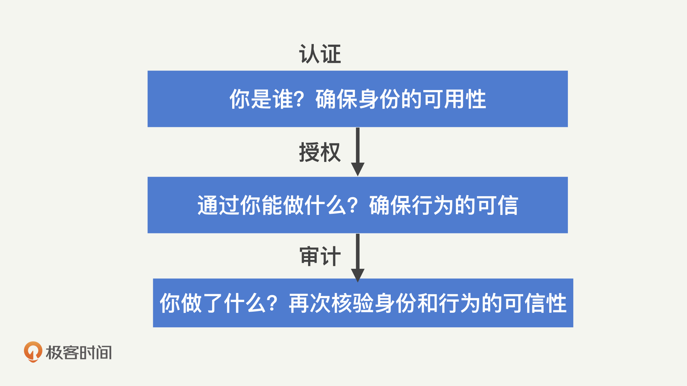

- 00 开篇词 别说你没被安全困扰过.md.html
- 01 安全的本质：数据被窃取后，你能意识到问题来源吗？.md.html
- 02 安全原则：我们应该如何上手解决安全问题？.md.html
- 03 密码学基础：如何让你的密码变得“不可见”？.md.html
- 04 身份认证：除了账号密码，我们还能怎么做身份认证？.md.html
- 05 访问控制：如何选取一个合适的数据保护方案？.md.html
- 06 XSS：当你“被发送”了一条微博时，到底发生了什么？.md.html
- 07 SQL注入：明明设置了强密码，为什么还会被别人登录？.md.html
- 08 CSRF_SSRF：为什么避免了XSS，还是“被发送”了一条微博？.md.html
- 09 反序列化漏洞：使用了编译型语言，为什么还是会被注入？.md.html
- 10 信息泄露：为什么黑客会知道你的代码逻辑？.md.html
- 11 插件漏洞：我的代码看起来很安全，为什么还会出现漏洞？.md.html
- 13 Linux系统安全：多人共用服务器，如何防止别人干“坏事”？.md.html
- 14 网络安全：和别人共用Wi-Fi时，你的信息会被窃取吗？.md.html
- 15 Docker安全：在虚拟的环境中，就不用考虑安全了吗？.md.html
- 16 数据库安全：数据库中的数据是如何被黑客拖取的？.md.html
- 17 分布式安全：上百个分布式节点，不会出现“内奸”吗？.md.html
- 18 安全标准和框架：怎样依“葫芦”画出好“瓢”？.md.html
- 19 防火墙：如何和黑客“划清界限”？.md.html
- 20 WAF：如何为漏洞百出的Web应用保驾护航？.md.html
- 21 IDS：当黑客绕过了防火墙，你该如何发现？.md.html
- 22 RASP：写规则写得烦了？尝试一下更底层的IDS.md.html
- 23 SIEM：一个人管理好几个安全工具，如何高效运营？.md.html
- 24 SDL：怎样才能写出更“安全”的代码？.md.html
- 25 业务安全体系：对比基础安全，业务安全有哪些不同？.md.html
- 26 产品安全方案：如何降低业务对黑灰产的诱惑？.md.html
- 27 风控系统：如何从海量业务数据中，挖掘黑灰产？.md.html
- 28 机器学习：如何教会机器识别黑灰产？.md.html
- 29 设备指纹：面对各种虚拟设备，如何进行对抗？.md.html
- 30 安全运营：“黑灰产”打了又来，如何正确处置？.md.html
- 加餐1 数据安全：如何防止内部员工泄露商业机密？.md.html
- 加餐2 前端安全：如何打造一个可信的前端环境？.md.html
- 加餐3 职业发展：应聘安全工程师，我需要注意什么？.md.html
- 加餐4 个人成长：学习安全，哪些资源我必须要知道？.md.html
- 加餐5 安全新技术：IoT、IPv6、区块链中的安全新问题.md.html
- 模块串讲（一）Web安全：如何评估用户数据和资产数据面临的威胁？.md.html
- 模块串讲（三）安全防御工具：如何选择和规划公司的安全防御体系？.md.html
- 模块串讲（二）Linux系统和应用安全：如何大范围提高平台安全性？.md.html
- 结束语 在与黑客的战役中，我们都是盟友！.md.html
- 捐赠
02 安全原则：我们应该如何上手解决安全问题？
你好，我是何为舟。
上一讲，我们一起拆解学习了CIA三元组，也就是机密性、完整性和可用性。它们分别代表了数据的“不可见”“不可改”和“可读”。简单来说，以购买极客时间专栏为例，机密性就是未付费用户无法学习这个专栏，完整性就是这个专栏的内容不会变成别的其他方向的内容，可用性就是你作为付费用户，能够随时学习这个专栏。
理解了CIA，上一节最后面试官问的“安全是什么”的问题，你现在一定可以回答出来了。面试官点点头，接着说道：“你觉得该怎么去解决安全问题呢？”
毫无疑问，不同的应用、不同的模块会受到不同的安全威胁，当然，我们面对这些威胁也会有不同的解决方案。万变不离其宗。正如安全威胁都是针对CIA三元组产生的攻击一样，安全解决方案在根本思路上也都是相通的。
今天，我就从方法原则这个层面上，来给你讲讲安全解决方案的主要思路。这块内容看起来比较偏理论，我尽量多从实践角度来给你讲我的理解，但是你一定要耐心看完，这样可以确保你对后面实践的内容能够理解得更加深入。
什么是“黄金法则”？
对于安全解决方案来说，不同的教材会有不同的解释。就我个人而言，我比较喜欢“黄金法则”这种理解方式。下面我就用这种方式来具体给你讲讲。
黄金法则主要包含三部分：认证（Authentication）、授权（Authorization）、审计（Audit）。为什么称它为“黄金”呢？一方面是因为，它包含的这三部分重要且通用；另一方面是因为，这三个单词的前两个字母都是Au，而Au在元素周期表中代表着“金”。
有的教材中，会给黄金法则加上问责（Accounting）这一部分，组成“4A法则”；还有的会加上身份识别（Identification），组成“IAAAA法则”。不管被划分为几个部分，这些法则的中心内容都是相似的，都是围绕着识别、认证、授权、审计、问责这五个部分展开的。因此，黄金法则其实就是IAAAA法则更高一层的概括，它将识别和认证、审计和问责归纳到了一起，更加强调了这两两之间的协同性质。
搞清楚了“黄金法则”的概念，我们现在来看它的三个部分（认证、授权、审计）。这三部分其实是一种串联的关系，它描述的其实是用户在使用应用过程中的生命周期：先进行登录、再进行操作、最后留下记录。

下面，我们就一一来看这三个部分。
1.身份识别和认证
首先，我们先来了解一下黄金法则的第一个部分：认证。认证其实包括两个部分：身份识别和认证。身份识别其实就是在问“你是谁”，你会回答“你是你”。身份认证则会问“你是你吗”，那你要证明“你是你”这个回答是合法的。
身份识别和认证通常是同时出现的一个过程。身份识别强调的是主体如何声明自己的身份，而身份认证强调的是，主体如何证明自己所声明的身份是合法的。比如说，当你在使用用户名和密码登录的过程中，用户名起到身份识别的作用，而密码起到身份认证的作用；当你用指纹、人脸或者门卡等进行登入的过程中，这些过程其实同时包含了身份识别和认证。
通常来说，不管你以什么形式进行登入，在身份识别的过程中，这些形式最终都需要落地成唯一的身份id。在你后续的操作中，身份id都会始终跟随会话，记录在日志中。这也是后续授权、审计和问责的基础。身份识别的过程并不关注合法性，因此，认证是这个部分中最为关键的一环。
依据具体的认证场景，对安全等级、易用性等的综合考量，认证形式可以大致分为三种。按照认证强度由弱到强排序，分别是：
- 你知道什么（密码、密保问题等）；
- 你拥有什么（门禁卡、安全令牌等）；
- 你是什么（生物特征，指纹、人脸、虹膜等）。
我们通过将多种类型的认证进行组合，可以形成多因素认证机制，进一步加强认证强度。常见的，在登录过程中，很多应用会在输入完账号密码后，让你进行手机验证，这其实就是结合了“你知道什么”和“你拥有什么”的双因素认证。
可信的身份认证是建立安全保障体系的第一步。如果身份认证被破解，则后续的保护或者补救机制都无法起到太多的效果。因此，很多时候，通过衡量一个应用的认证安全等级，我们就能看出它整体的安全水平。那么怎样才能做好身份认证这个环节呢？这就需要进行系统分析了，这个问题我们在后续的课程中会详细讲解。
2.授权
在确认完“你是你”之后，下一个需要明确的问题就是“你能做什么”。毫无疑问，在系统或者应用中，我们的操作都会受到一定的限制。比如，某些文件不可读，某些数据不可修改。这就是授权机制。除了对“你能做什么”进行限制，授权机制还会对“你能做多少”进行限制。比如，手机流量授权了你能够使用多少的移动网络数据。
最原始和最安全的授权机制，一定是你的每一次操作，都经过了管理人员的审批和确认。比如我们申请签证的过程，其实就是一次申请授权的过程。当部分国家的签证策略比较严格时（如美国），那么我们每次出入境都需要重新申请签证，这也就意味着，会有很多的操作需要进行授权审批，其效率肯定是无法保证的（可以想想美国大使馆门前的长队）。
因此，很多时候，我们会定义自动化的授权机制来进行更快速的响应。比如，某些国家会制定免签或者落地签政策，只要符合一定的条件（如拥有中国护照），就能够直接出入境。这就相当于将“是否拥有中国护照”当成了一种授权的规则。同样地，安全领域中也有很多成熟的授权策略，如：自主访问控制、强制访问控制等。关于这些策略，在后续的课程中，我们也会进行详细地讲解。
3.审计和问责
当你在授权下完成操作后，安全需要检查一下“你做了什么”，这个检查的过程就是审计。当发现你做了某些异常操作时，安全还会提供你做了这些操作的“证据”，让你无法抵赖，这个过程就是问责。
举一个生活中的例子，当你去银行办理业务时，工作人员会让你对一些单据签字。这些单据就是审计的信息来源，而签字则保证了你确认这是你进行的操作，这就是问责的体现。
审计和问责通常也是共同出现的一个过程，因为它们都需要共同的基础：日志。很容易理解，所谓审计，就是去通过日志还原出用户的操作历史，从而判断是否出现违规的操作。而问责则是通过日志的完整性，来确保日志还原出来的操作是可信的。想象一下，如果一份日志可以被人任意地篡改，那我们基于这份日志去进行审计，即使发现违规操作，也无法证明违规操作确实发生了，只能是白费功夫。
可能你会产生疑问，你已经获得了授权，理论上这些操作都应该是合法的，那为什么还需要审计呢？当然，如果授权机制能够达到“完美”，那么审计的意义确实不大。然而，我们一直都强调，安全不存在“银弹”，不可能达到100%的安全。即使是1%的漏洞，也可能造成100%的损伤。
在授权中，我们需要平衡可用性和安全性，很多时候都会选择牺牲部分的安全保障，来降低使用成本。而审计是事后的策略，它做的任何操作，理论上都不会直接影响用户，因此，能够做到更全面更严格，也能发现更多的问题。所以，审计这一环节，对于发现安全问题、回溯产生的攻击、完善安全保护体系来说，非常重要。
而问责，是对审计结果的一个保障，有的时候我们也称之为“不可否认性”。一方面，它保证了黑客无法通过篡改日志或者仿造身份，来隐藏自己的行为；另一方面它也保证了，当审计中发现了恶意的行为，需要寻求法律保护时，我们能够提供充分的证据。
从法律上来说，一个企业和应用在遭受攻击时，只能进行被动防御。如果想要主动出击，打击黑客的话，必须通过法律的途径。因此，建立完善的问责机制，能够为企业提供“法律保护”，大大提高企业安全的自信力。
这里你注意一下，一定不要狭义地去理解黄金法则的每个模块。认证不仅是帐密登录，也可以是生物特征识别或者证书等形式；授权不只是基于简单规则的访问控制，基于内容或者会话的检测等也是授权的一部分；审计也不只是简单的翻日志，很多机器学习、异常检测的算法，也都能运用到审计中来。针对不同的数据，不同的访问形式，我们能够采用的认证、授权、审计技术都不尽相同。
换一种方式来概括的话，你可以这么理解：大部分情况下，事前防御属于认证，事中防御属于授权，事后防御属于审计。
企业安全建设管理
通过学习“黄金法则”，我们可以看到，安全是一个很浩大的工程，涉及各个方面的投入建设。对于任何一个公司来说，建立安全体系都是一个长期过程，因此，我们需要一个有效的管理方案来进行推动。
通过这么些年的实践，我觉得安全问题需要自上而下的方式去进行管理和推动。这也是为什么，大部分安全负责人加入企业做的第一件事就是向上教育，只有企业高层理解了安全，才有可能有效推动安全的发展。
正如，我们在开发一款应用时，需要评估功能的优先级，先以有限的资源实现1.0版本，然后再逐步进行迭代，不断完善。在做企业安全建设时，我们也需要对发展阶段进行划分，进行合理管理。通常来说，我们会根据周期的不同，制定三种安全规划，在这里，我举个简单的例子，比方说，可以制定5年左右的战略计划、1年左右的战术计划、3个月左右的操作计划。
- 战略计划是一个较长期的安全目标，它和企业的长期发展目标相结合，保证安全的发展能够符合企业的长期发展方向。
- 战术计划会基于长期的安全目标，拆解出详细的任务计划，比如：项目列表、安全预算、人员扩张等。
- 操作计划则是对战术计划的具体实现，包括人员的分配、资源的投入、进度的安排等。
和产品研发一样，当建立好不同的计划后，我们就能够给予企业的安全建设一个明确的方向，大大降低投入的成本，提高效率。因此，挖掘安全问题，明确安全计划，对于企业建立安全体系来说，至关重要。
总结
好了，今天的内容差不多了，下面我来带你总结回顾一下，你要掌握的重点内容。
黄金法则描述的是，在用户操作的各个环节中，我们所需要采取的安全策略。黄金法则的核心内容包括三部分：认证、授权、审计。大部分情况下，事前防御属于认证，事中防御属于授权，事后防御属于审计。
毫不夸张地说，所有的安全保护措施或者工具，都是在黄金法则的一个或者多个模块中进行工作的。安全是严格遵从“木桶原理”的领域，只专注于某一个方向必然无法产出最优的结果。因此，我们一定要积极寻找短板，全面发展。
最后，我想说，安全没有“银弹”。只有当可用性接近0时，我们才有可能接近100%的安全。比如，将电脑关闭电源并深埋地下。所以，在实际进行安全防御的时候，不要过分追求完美，先有基本的保障就可以了。
思考题
最后，给你留两道课后思考题，你可以选择其中一道来回答。
1.通过今天的学习，你可以尝试分析一下，你负责的系统和应用中，在认证、授权和审计方面，分别做了哪些工作？又起到了怎样的保护效果？
2.我在前面说了，安全问题需要自上而下的方式去进行管理和推动，这只是我个人的观点。结合你们公司的实际情况，站在你的角度，你觉得你们公司应该如何去推动安全建设呢？
欢迎留言和我分享你的思考和疑惑，也欢迎你把文章分享给你的朋友。我们下一讲再见！
© 2019 - 2023 Liangliang Lee. Powered by gin and hexo-theme-book.